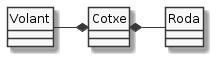
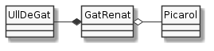

Composició¶
En la programació orientada a objectes, els programes es composen de classes que interaccionen les unes amb les altres. Aquesta interacció de les classes es realitza en funció de la relació que tenen aquestes classes entre si.
Una de les relacions interessants és la de composició amb la que un objecte es composa d’altres objectes que fa servir per a aconseguir el seu objectiu.
Podem entendre-ho com que una instància conté instàncies d’una altra classe. Per exemple, un cotxe conté rodes, volant, etc.

La implementació de la composició no pot ser més senzilla: a partir d’atributs.
Per exemple:
1 2 3 4 5 6 7 8 9 10 11 12 13 14 15 16 17 18 19 | public class Cotxe {
private String matricula;
private Volant volant;
private Roda[] rodes;
public Cotxe(String matricula, int numRodes) {
this.matricula = matricula;
volant = new Volant();
rodes = new Roda[numRodes];
for (int i=0; i<numRodes; i++) {
rodes[i] = new Roda();
}
}
public String getMatricula() { return matricula; }
public Roda getRoda(int numRoda) {
if (numRoda < 0 || numRoda >= rodes.length) return null;
return rodes[numRoda];
}
public Volant getVolant() { return volant; }
}
|
Les classes Volant i Roda han d’estar també definides, com també
ho està String.
 Exercici 04_21. Els ulls del gat Renat
Exercici 04_21. Els ulls del gat Renat
Un tema breu¶
Aquest ha estat un tema molt breu, oi?
No et deixis enganyar. La composició és una de les maneres més potents per reutilitzar classes doncs si podem descomposar una classe en altres que ja tenim, ens podem estalviar molta feina.
Sent precisos, amb composició estem agrupant dos conceptes diferents, anomenats agregació i (pròpiament) composició.
L’exercici dels ulls seria un exemple de composició mentre que el del picarol correspondria a una agregació. Fixat que el picarol és quelcom accessori pel nostre amic Renat. Es a dir, pot existir sense picarol. En canvi, els ulls formen part del gat, en el sentit que neix amb ells.
En UML, les dues relacions es representen lleugerament diferents:

No en farem gaire més èmfasi durant aquest curs. En cas que tinguis interès en aprofundir en les diferències, pots consultar, per exemple aquest article